Making rooms
Author(s): catinsuranceTags:
Introduction⚓︎
To create rooms for Isaac, it is standard to use an unofficial room editor application named "Basement Renovator". Although there's an official room editor in the game files, it doesn't work with Repentance or Repentance+, and is much harder to use compared to Basement Renovator. Even the Repentance developers used a modified version of Basement Renovator to make rooms!
Note
This guide is written for Windows users. There might be extra steps not listed here for Mac or Linux systems.
Basement Renovator Usage⚓︎
Installing Basement Renovator⚓︎
Basement Renovator is hosted on Github. Downloading it goes as follows:
1. Navigate to the releases page on the Basement Renovator repository by clicking here: https://github.com/Basement-Renovator/basement-renovator/releases
2. The first thing you see should have a green label saying "Latest". This is the most recent version of Basement Renovator. Basement Renovator does not automatically update, so make sure you check back here every so often!
3. Within this release, scroll until you see the "Assets" dropdown menu, and click the "BasementRenovator.zip" file to download the .zip archive containing the application.
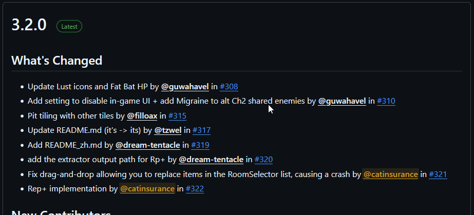
- Finally, extract the contents of this
.ziparchive into a new folder anywhere on your PC. You can use applications like 7-Zip or WinRaR to do this, though your operating system may already have an option built in to extract when you right-click the archive. You can delete the.ziparchive after you're done extracting the files if you'd like.
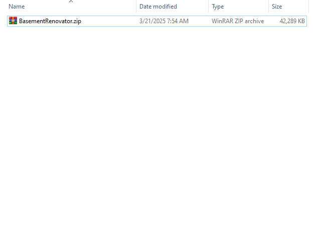
Room List⚓︎
Before you can start placing entities, first you need to create a room.
On the right of the screen, you should see your room list. At the bottom of this menu, you can hit "Add" to create a new room. You can select this room to edit by left-clicking on it in the list, or right-click it to configure it. Double-click the room on the list or press F2 to rename it.
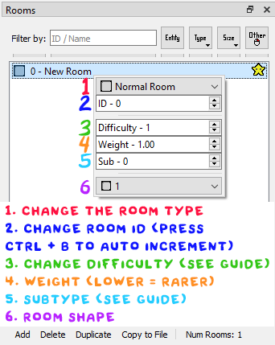
- This dropdown menu lets you change the room type (normal, secret, error, etc.)
- The ID is used to differentiate the room from other rooms internally. Press
Ctrl + Bto automatically increment room IDs starting from the first ID in the list. - Difficulty determines how the room shows up. These are expected to be specific numbers, and are chosen as a matter of opinion. You'll get a feel for what rooms should be what difficulty over time. The difficulties mean as follows:
- Difficulty 0 rooms cannot appear naturally in game.
- Difficulty 1 rooms are basic rooms with either no enemies, or enemies that propose no real threat. They only appear on the first floor of a stage, and are more common on Normal difficulty.
- Difficulty 5 rooms are basic rooms with a few enemies or hazards. They can appear on both floors in a stage, but are less common on the second floor in Hard mode.
- Difficulty 10 rooms are starting to get tough, with some harder enemies or hazards here and there. These rooms appear on the second floor in Normal mode, and on both floors in Hard mode.
- Difficulty 15 rooms are very tough and require focus to clear without taking damage. They can only spawn on the second floor of a stage and only in Hard mode.
- Difficulty 20 rooms can only appear in Void.
- Weight determines how common a room is. Weight is a fractional number starting at 1.00, with rooms of weight 0 never appearing. There's almost no scenario where this needs to be above 1.00.
- Sub determines the subtype of the room. Subtype can alter many different things (such as how the room generates or its appearance) depending on the room type and stage the room is appearing on. For an in-depth guide on room subtypes, click here.
- This dropdown menu lets you change the shape of the room.
At the bottom of the rooms list, you can press "Delete" to delete the room, and "Duplicate" to create a copy of the room. Hold ALT to change "Duplicate" to "Mirror X", which duplicates the room and flips it on the x-axis. Hold ALT and SHIFT to change "Duplicate" to "Mirror Y", which duplicates the room and flips it on the y-axis. If the text ever gets stuck as "Mirror X" or "Mirror Y" (usually as a result of using the ALT + TAB shortcut on Windows), simply press ALT again to set it back to normal.
The "Copy to File" button allows you to copy a room from your room list to a different .xml file, or into a brand new .xml file. Click here to read more about how rooms are saved.
Finally, the top of the rooms list has many tools that you can use to filter through your rooms. You can filter by numerical ID or room name, search for rooms with the currently selected entity, search by room type, search by room size, or right-click the final box to the right to view an expanded filter menu. The red box under any of these filter buttons lets you know that the filter is currently enabled. Click this red box to disable the filter.
Entity Palette⚓︎
The Entity Palette is what allows you to select entities that you can place in a room. The top of the Palette has various tabs that contain different types of entities. There's also collapsable groups within each tab that can hold any type of entity.
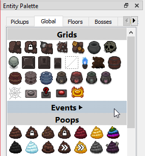
To add modded entities to Basement Renovator, create a basementrenovator folder in your mod's folder. Within this folder, create a file named EntitiesMod.xml, and a folder to hold all of the entity icons.
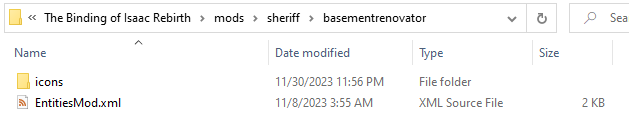
Mod path info
Basement Renovator will attempt to automatically locate your mods folder, where it'll import every entity configured to show up in Basement Renovator from your active mods. Before launching Basement Renovator, make sure the mods with the entities you want to make rooms with are enabled. Afterwards, if those entities still are not appearing anywhere in the Entity Palette (even if you search for their name), it may be because the InstallFolder is not set up to point to your mods folder.
In the same directory as Basement Renovator, you should see a file called settings.ini that is generated upon launching the application for the first time. It's a text file containing a few settings.
You can look into this file to see if the InstallFolder setting is equal to the path to your mods folder. Here's how to check:
- Open up
settings.iniin a text editor like Notepad. - Look for the
InstallFolder=setting, and see if the the file path is correct. It should similar to this if it is (though your mods folder path is likely different from mine):
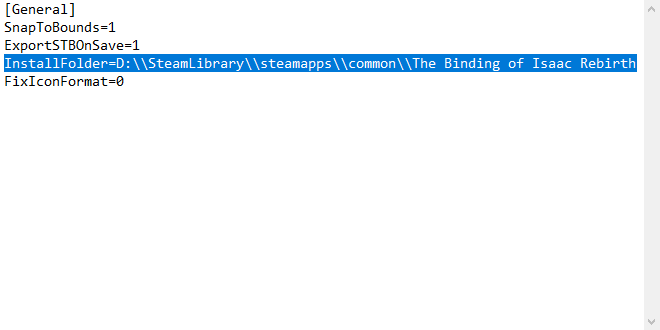
Note that there should be an extra backslash before every backslash in the file path!
- If the file path does not look right, you must navigate to it and type in the file path.
- Open the game's directory (click the gear on the game in your Library in Steam, hover over Manage, then Browse Local Files).
- Click on the
modsfolder. - Click on the box holding the file path to copy it as text.
- Paste it after
InstallFolder=insettings.ini, but make sure to add an extra backslash behind every backslash!
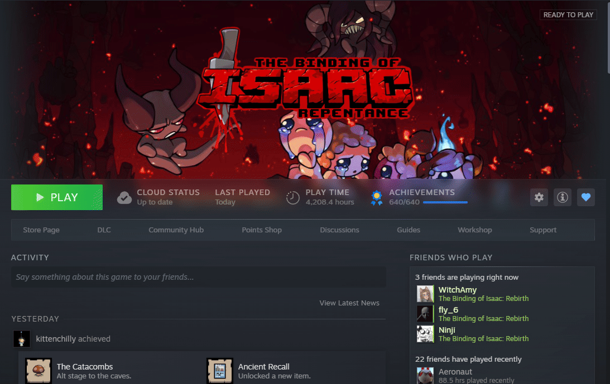
DLC support
When Basement Renovator added support for Repentance+, the default DLC that Basement Renovator targets changed. Some mods decide what versions their entities can show up in manually using a file named VersionsMod.xml.
If you're trying to make rooms for a mod that has done this but hasn't added support for Repentance+, you can manually specify which DLC Basement Renovator is making rooms for by editing your settings.ini file.
- Navigate to the directory Basement Renovator is in and open the
settings.inifile in a text editor such as Notepad. This file is generated upon launching Basement Renovator for the first time. - Then, add a new line at the bottom with the text "CompatibilityMode=", and then the name of the DLC you want to target. In most cases where you're switching off of Repentance+, this should just be "Repentance".
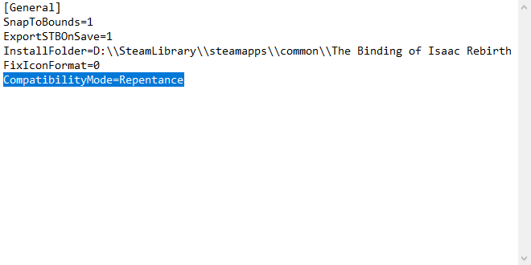
Room Editor⚓︎
Select an entity from the Entity Palette and right-click anywhere in the room to place it. You can press CTRL + G to toggle the grid visuals. You can also left-click and drag to select multiple entities at once.
Sometimes it is necessary to place entities in walls. By default, Basement Renovator will not allow you to do this. To fix this, hit the Edit button at the top, then untick "Snap to Room Boundaries".
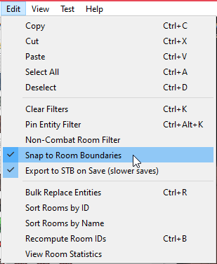
Placing multiple entities on top of each other does not spawn them all on the same tile, instead making the game choose randomly between the entities placed on the tile. You can control the weight of each entity on the tile to determine how often it'll be chosen to spawn over the other entities. Click on the title with the stacked entities, and edit the numbers. The chance of an enemy spawning is the weight divided by the sum of all weights. For example, if you have an entity of weight 1.00 stacked with two other entities of the same weight, the chance will be 33%.
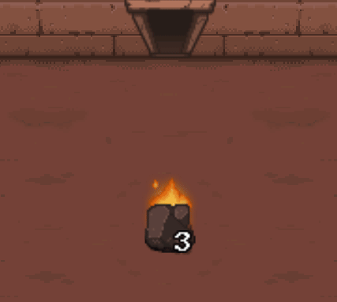
Certain vanilla entities like the Ball and Chain can be middle-clicked to configure extra properties. Mods can also use this functionality, though this won't be explained in depth in this tutorial.

You can double-click doors to disable them. Disabling all doors will make the room not show up naturally, but will also crash the game if playtested. Double-check that doors that cannot be entered are disabled!
Lastly, the name of the file being edited determines the backdrop for normal rooms. For example, having "dross" in the file name will put you in Dross while testing and editing in Basement Renovator.
Testing rooms⚓︎
To test a room, press the "Test" button at the top and then click "Test Current Room - Instapreview". This'll open an alert dialog and launch Isaac. Pressing "Okay" in this dialog will close the game. This dialog prevents you from editing rooms in Basement Renovator, and can be disabled by clicking the "Enable Test Mod Dialog" tickbox. You can also disable the in-game text at the bottom-left corner by the "Disable In-Game UI" tickbox here.
The "Test Configuration" button takes you to a menu that lets you set which character you're playing as, as well as add some commands to run automatically when entering the room. Generally, it's recommended to give yourself certain items when testing rooms for certain floors in order to keep things balanced, although this is a matter of opinion. Read this Google Doc to see the recommended testing loadouts for mods like Fiend Folio.
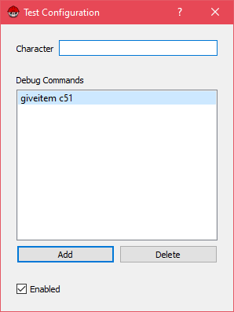
Adding rooms to your mod⚓︎
The game expects .stb files to be placed in the rooms folder within your mod's content folder. Basement Renovator will save rooms to both .xml and .stb format (press CTRL + S), although the .xml file is used solely for easy editing and is not read by the game. Make sure the .stb file is named the exact same as the stage you're adding those rooms to.
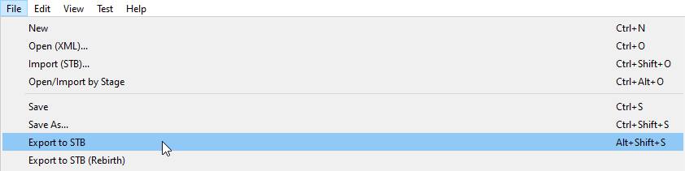
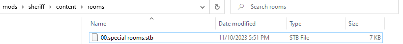
Room Design⚓︎
There is no "correct" way to design rooms, therefore this section is ultimately a matter of opinion. Regardless, there are a few things you should look out for when making rooms in order to keep them fair, and to keep them up to standard with vanilla Repentance rooms.
Placement⚓︎
Be wary of placing rocks, bomb rocks, or mushrooms near doors. It feels unfair to players to enter a room and immediately take damage to a bomb rock or harmful mushroom because of something that can break those tiles, such as the Stompy transformation. There is a non-replaceable rock tile for the purpose of preventing harmful rocks from appearing if you need it.
Additionally, try not to place enemies right in the way of doors. Placing an enemy too close to a door can give the player a very short window to react to an attack, or can cause the player to instantly run into the enemy when entering the room. Ideally, the player should be able to stand still for at least a full second before needing to dodge enemies.
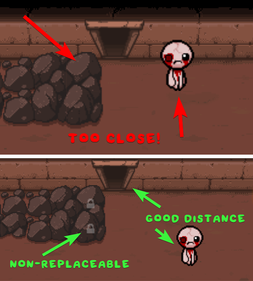
Block disabled doors⚓︎
In vanilla, rooms tend to block door entrances that are disabled with some sort of grid tile. This is because just leaving the door unblocked can be confusing to players when they're looking for Secret rooms. Note that even when there are enemies at a disabled entrance that would signal to the player that the entrance is likely disabled, it'll become much less apparent that the door is meant to be blocked after the room has been cleared.
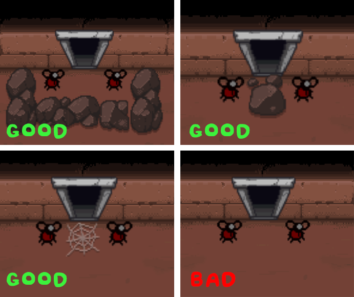
Unavoidable damage⚓︎
Avoid layouts where the player can get cornered in a way that is unfair, difficult, or impossible to avoid without taking damage. Most vanilla rooms try to give the player an adequate amount of space to evade attacks depending on what enemies the room contains.
Additionally, avoid situations where the player takes damage and has no means of avoiding it. This can happen for many reasons, such as the way the tiles are laid out, or the placement of the enemies. Consider playtesting your room with low speed or low knockback item combinations to ensure that it remains fair during most runs. As a general rule of thumb, if YOU cannot clear the room without taking damage, then the room is too hard.
Use entities appropriate for the stage⚓︎
Make sure that the entity you're placing actually appears on the stage you're using it in. Some enemies appear very rarely and should either never be used, or only on special occasion when it makes sense.
Basement Renovator includes some enemies that only appear in one or two rooms on a stage in that stage's category in the Entity Palette, so it may become useful to double-check how many rooms an enemy is included in on a stage in vanilla before using it.
This can be done by selecting the entity in the Entity Palette, then sorting by that entity in the room list by clicking its icon next to the search bar.
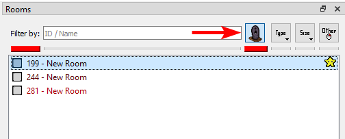
There are only 3 rooms in Cellar in vanilla that contain a Nightcrawler, so consider its rarity before using it in a room.